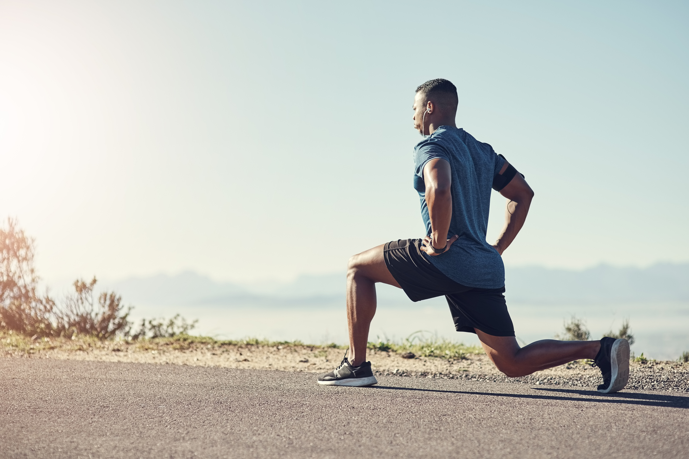

2 February,2021.
Try our 5-Minute Stress Reliever Full-Body Workout to get an effective full-body workout that will not only get your heart pumping but will help reduce stress.
Perform 1-2 rounds of this workout at high intensity.
Jumping Jacks
Begin standing with feet together and arms by your side. Jump up and out to the side with both feet so that your feet are now wide apart. While jumping out, raise your arms straight up and out to your side until your palms are together above your head. Jump your feet back together as you return your arms to your side and you’ve completed 1 rep.
The goal: 20 reps
Air Squats
Start with your feet shoulder-width apart and toes slightly turned out. Bend your knees, lowering your hips until they’re between your knees or as low as you can go while keeping your back as upright as possible. Repeat for reps.
The goal: 15 reps
Push-Ups
Get in plank position on all fours from either your knees or your toes depending on your comfort level. With hands directly below your shoulders and body straight, lower your body until your chest touches the floor. Press up from the floor until your arms are straight.
The goal: 10 reps
Glute bridges
Lie on your back, with arms comfortably at your sides and knees bent. Press your heels into the floor and raise your hips, shifting pressure to the upper shoulder. No pressure should be felt in the neck or back. For advanced-level positions, try touching your fingertips to the back of your shoes or clasping your hands behind your back and drawing your shoulder blades together
The goal: 10 reps
Inchworms
From a standing position, bend over as if you’re going to touch your toes but place your hands flat on the ground in front of you. (Depending on your flexibility, you may need to slightly bend your knees or place your hands a few inches away from your feet.) Slowly walk your hands forward until your body is in a plank position, and then slowly walk your feet forward to meet your hands, returning to the bent position.
The goal: 5 reps.
Ready to try our 5-Minute Stress Reliever Full-Body Workout?
Writtern By,
goldsgym
 Home
Gallery
Blogs
About Us
Contact
Sign In
Join
Home
Gallery
Blogs
About Us
Contact
Sign In
Join